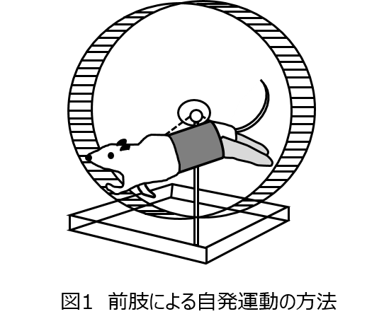
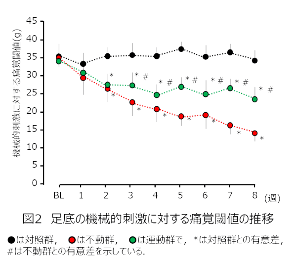
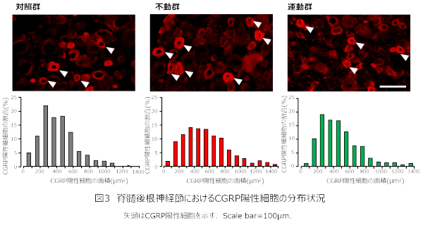
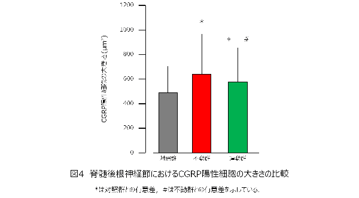
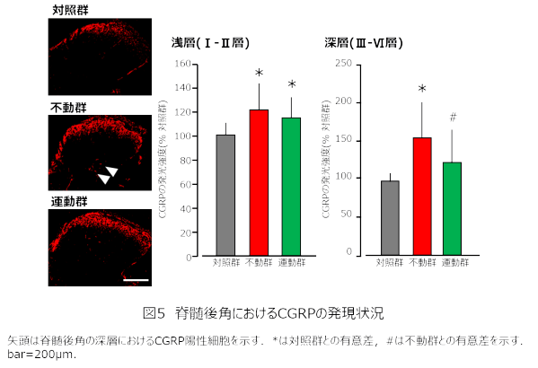

四肢の一部あるいは全身の不動は痛みを惹起するとされており，このような痛みは不動性疼痛と呼ばれています．不動性疼痛に対しては，運動療法によって不動状態を是正することが重要であり，最近の知見を参考にすると運動誘発性疼痛軽減効果（以下，EIH）も期待できます．また，EIHは有痛部以外の部位の運動でも認められ，しかも強制運動より自発運動の方がその効果は大きいとされています．そこで本研究では，ラットの後肢をギプス固定することで惹起される不動性疼痛に対する非不動部である前肢の自発運動の効果を検討しました．
両側後肢をギプス固定したラットに対して非不動部位である前肢による自発運動を負荷すると，不動性疼痛の発生を抑制できることが示されました．
＜方法＞
実験動物：8週齢のWistar系雄性ラットを用い，以下の３群に振り分けました．
1）無処置の対照群
2）ギプスを用いて両側足関節を最大底屈位で8週間不動化する不動群
3）不動の過程で非不動部位である前肢の自発運動を実施する運動群（図1）
自発運動の方法：運動群のラットを，ラット回転式運動量測定装置の中に後肢が接触しないよう体幹を懸垂し，非不動部位である前肢を用いた自発運動を60分/日，5回/週の頻度で負荷しました（図1）．
免疫組織学的検索：実験期間中は電子式von Frey装置を用いて足底の機械的刺激に対する痛覚閾値を測定しました．また，実験期間終了後は，脊髄後根神経節（DRG）におけるカルシトニン遺伝子関連ペプチド（CGRP）陽性細胞数と脊髄後角におけるCGRPの発現レベルを免疫組織化学的染色により分析しました．

＜結果＞
不動2週目以降，不動群と運動群の足底の機械的刺激に対する痛覚閾値は対照群のそれと比べて低下していました．また，不動3週目以降，運動群の痛覚閾値は不動群のそれと比べて低下が抑えられていました（図2）．このことから，非不動部位である前肢の自発運動を行うことで不動性疼痛を抑制できることが示されました．

DRGにおけるCGRP陽性細胞の数については，3群間に差を認めませんでした．また，CGRP陽性細胞の大きさの分布状況をみると，不動群は対照群より右方に偏位していましたが，運動群は対照群とほぼ同様の分布を示しました（図3）．そして，細胞の大きさの平均値は，不動群と運動群は対照群と比べて大きく，運動群は不動群と比べて小さいことが示されました（図4）．


脊髄後角の浅層におけるCGRPの発現状況は，不動群と運動群は対照群と比べて増強しており，不動群と運動群を比べると差は認められませんでした．また，脊髄後角の深層では，不動群は対照群と比べて発現が増強していましたが，運動群は不動群と比べて発現が減弱しており，対照群と比べて差は認められませんでした（図5）．

本研究の結果，非不動部である前肢の自発運動を実施することで，後肢の不動性疼痛の発生が軽減できることが明らかとなりました．そして，この効果には一次求心性ニューロンのphenotype-switchの抑制ならびにそれに伴う脊髄後角での中枢感作の抑制が影響している可能性が示唆されました．骨折などの治療のために行われるギプス固定や創外固定は医学的管理として不可欠であり，臨床では一定期間，患部の不動が必要な場面があります．しかし，ギプス固定などに伴う四肢の一部の不動や安静に伴う全身の不動は慢性疼痛のリスクファクターになることが知られており，本研究の成果を踏まえると，そのようなケースに対しては非不動部を活用した運動療法を考慮することが重要になるといえます．